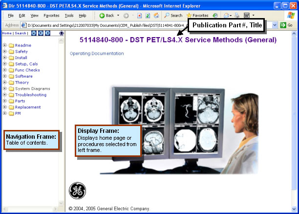
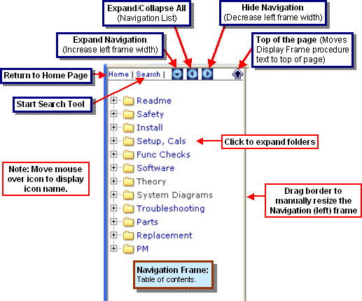
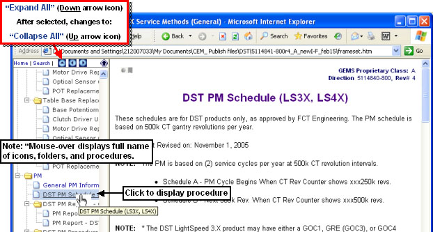
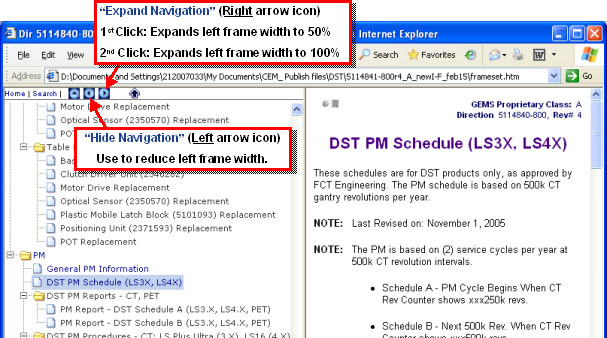
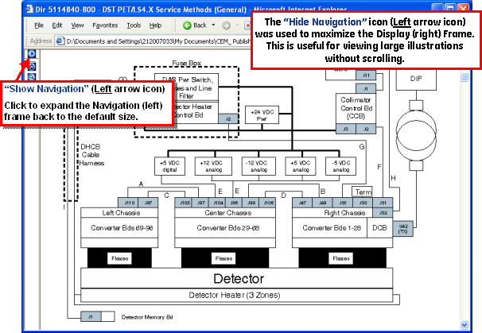
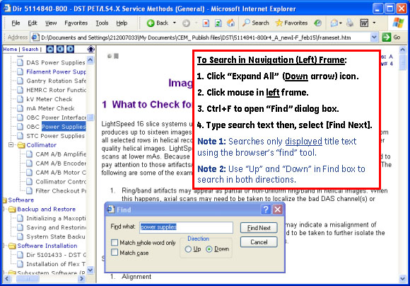
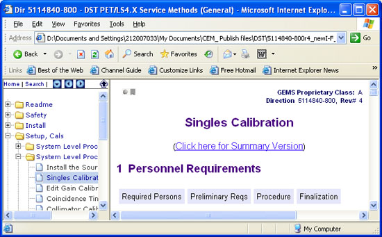
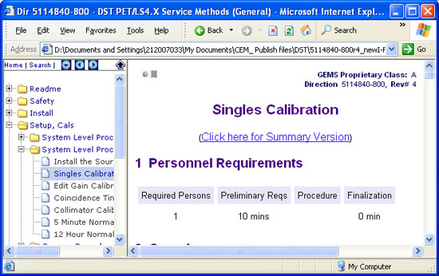
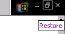
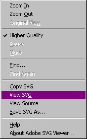

Proprietary to General Electric
Direction 5321294, Rev# 3
GOC6 Service Methods
Proprietary to General Electric |
| Last Revised: | March 15, 2007 |
This module contains information on the following topics:
Section 1 - Using GE Healthcare HTML Publications
Section 2 - Printing an HTML Procedure
Section 3 - Maximizing Web Browser Viewing Area
Section 4 - HTML Document Tips and Tricks
Section 5 - Advanced HTML Document Tips and Tricks
Section 6 - Embedded PDFs
Section 7 - Scalable Vector Graphics (.svg)
This section provides general information for using GE Healthcare HTML publications.
The User Interface for GE Healthcare HTML publications consists of a Navigation (left) Frame, and a Display (right) Frame. See Illustration 1.
Illustration 1: Home Page

The Navigation Frame is used to find and select procedures and also contains a topbar with navigation buttons/icons. Illustration 2 explains the Navigation Frame features.
| NOTE: | The goal is to keep the information categories shown in this illustration standard across GE Healthcare Service publications. Additional categories may be added, as applicable, or categories may be removed, where not applicable. |
Illustration 2: Navigation Frame Features

Selecting an information category in the Navigation Frame displays a list of sub-categories (“folders”) and/or content modules (items with “page” graphic in front of the title). ”Click” on a sub-category to expand the menu. To view a content module, click on the module title or “page” graphic. The content module will open in the Display Frame.
| NOTE: | If no Search tool is available for the publication, the [Search] button is inactive or you may see a blank pop-up window when you select the button. |
The topbar “Expand All” icon can be used to quickly expand all folders. See Illustration 3. When fully expanded, select the “Collapse All” icon to collapse all folders.
Illustration 3: “Expand All” Feature

The Navigation Frame width can be increased to see more title text by either selecting the “Expand Navigation” icon or dragging the frame border. See Illustration 4
Illustration 4: “Expand Navigation” Feature

The Navigation Frame width can be decreased to provide maximum viewing size in the Display Frame by either selecting the “Hide Navigation” icon or dragging the frame border. See Illustration 5.
Illustration 5: “Hide Navigation” Feature

If available, the publication-level search tool (use the [Search] button) can be used to search ALL content modules in the publication. However, to quickly search just the text displayed in the Navigation Frame or Display Frame, use the web browser's standard “Find” tool. Illustration 6 shows how to do a simple search in the procedure titles (example shown for Microsoft® Internet Explorer web browser).
Illustration 6: Text Search in Navigation Frame

To print a procedure using Microsoft® Internet Explorer browser:
Select the procedure to print.
Click the mouse in the Display (right) Frame.
Select File → Print Preview then select "Only the selected frame". The default "As laid out on the screen" prints just the first page with both Navigation and Display frames.
When viewing documents in a web browser, it is often desirable to maximize the viewing area. This section explains how to do this, for Microsoft® Internet Explorer, by manipulating the browser's toolbars. The viewing area in other web browsers can be maximized through similar means.
Unused Toolbars consume valuable desktop space. See Illustration 7.
Illustration 7: Unused Toolbars Consume Space

Optimizing the browser's toolbars results in maximum viewing area. See Illustration 8.
Illustration 8: Maximized Browser Document Display Area

To remove unused or unnecessary toolbars:
From the IE menu, select View → Toolbars.
Select any menu with a checkmark ( ), to remove it from the browser
window.
), to remove it from the browser
window.
The size of toolbars that are kept may be reduced through several means:
Reduce the icon size
Use “Selective Text”
Remove unused buttons
Use the Customize Toolbar dialog box to perform these functions. To access this dialog box, select View → Toolbars → Customize, from the IE menu bar.
The Customize Toolbar dialog box is shown in Illustration 9.
Illustration 9: “Customize Toolbar” Dialog Box

A third way to increase viewing area is to move the toolbars. To move the toolbars, simply use the mouse to drag them to a new location.
Toolbars may be placed side-by-side. If the horizontal space is too small to display all buttons on the toolbar, a down-arrow will appear at the right end of the toolbar. When the mouse is positioned over the arrow, the words “More Buttons” will appear. Simply select the down-arrow to view the “hidden” menu buttons.
Some experimenting may be necessary, to discover the optimal placement of the toolbars.
Most browsers have a function that will allow the user to view a page “Full Screen”. Full Screen maximizes the area of a computer display that is used by the content of a web page.
There are two ways to change Internet Explorer to “Full Screen” view:
From the browser's menu, select View → Full Screen
Press <F11>
Likewise, there are two ways to return Internet Explorer to “Normal” view, from “Full Screen” view:
Click the “Restore” icon, in the upper right-hand corner of the screen (see illustration, below)

Press <F11> again
The following are general tips and tricks that may be used to aid the navigation and use of HTML documents:
Use <alt> + <left-arrow> to go back one screen. This will usually (although not always) function
the same as the browser's “back arrow” ( ).
).
“Right-click” on a link and choose “Open in New Window” to open the linked module in a separate browser window.
Use “Open in New Window” before attempting to print or save a module.
The following tips and tricks may be useful for saving or editing (for feedback purposes) HTML documents:
Use the Save as type: → Web Archive, single file (*.mht) option to save a self-contained html file (including graphics).
Use the Save as type: → Web Page, complete (*.htm, *.html) option to save the html code and supporting files (e.g., graphics) separately. Note that this will place all of the graphics in a separate folder, which must be maintained with the same relative path to the .htm file.
The advantage of saving as “web page, complete” over “web archive” is that the htm file can then be opened and edited in MS Word. Using the “track changes” feature, the htm file may then be marked up for changes, and submitted back to headquarters for update.
Some content modules contain embedded PDFs. There are two reasons that PDFs are used in GEMS HTML documents:
Separate Directions are linked into the HTML publication. Such PDFs are discrete publications that are:
Available individually through other channels (i.e., independently of the HTML publication)
Revision controlled independently of the HTML publication
Linked into the HTML publication (through content modules) as a convenience to the end user. This creates a “one-stop” publication for service documentation.
PDFs of illustrations are linked into a content module. This is done in the case of illustrations that are too large to fit comfortably on the screen of a standard notebook computer. In many cases, scalable PDFs will be offered via a link found immediately before or immediately after a low resolution version of the graphic in question.
To view a PDF, simply select the PDF icon, to open it in a new browser window.
| NOTE: | The plug-in version of Adobe Reader offers a reduced feature set. Some functions, such as the Adobe Advanced Search, will not operate from the plug-in. To take advantage of Adobe Reader's full feature set, save the PDF to a local drive and then open it directly in the Adobe Reader application (i.e., not in a web browser). |
In addition to JPEGs, GIFFs and PDFs, content modules may contain Scalable Vector Graphics (.svg). SVGs have the advantage over JPGs and GIFs of being scalable, that is, the user may zoom in/out without the image breaking up. The advantage over PDF is that the image may be imbedded directly in the HTML module.
| NOTE: | Your HTML browser must support SVGs, in order to view them. If your browser does not support SVGs, you may download an SVG viewer, from adobe.com. |
There are two ways to view a scalable vector graphic, in an HTML document.
Original window
New window - “Right-click” and choose View SVG (see Illustration 10) to open an SVG in a new window.
Illustration 10: SVG “Right Click” Menu

You can move, expand, or reduce an SVG. See Table 1.
| NOTE: | The SVG will resize if you resize the original display window. It will NOT resize in a new (View SVG) window. |
| NOTE: | For new (View SVG) window, when the scroll lock is enabled, the arrow keys may be used to pan the image. |
Table 1: SVG Viewing Actions
| Action | Keyboard Method | Right-Click (Menu) Method |
| Zoom In | Hold the <Ctrl> key then left-click to zoom in at the mouse pointer location. | “Right-click” and select Zoom In. |
| Zoom Out | Hold the <Ctrl> and <Shift> keys then left-click to zoom out. | “Right-click” and select Zoom Out. |
| Pan | Hold the <Alt> key then click-and-drag with the mouse to pan (move) an SVG image. | None |
| Original Size | None | “Right-click” and select Original View. |
The following is an example of a scalable vector graphic.
Illustration 11: Example SVG